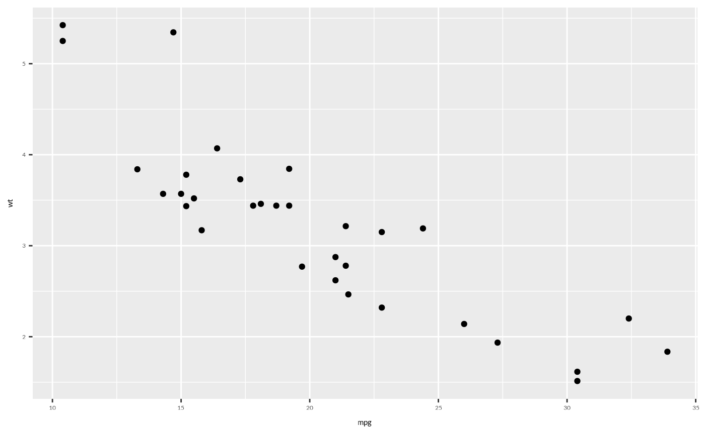

wjp_fonts() loads the standard fonts used in WJP visualizations from Google Fonts.
This function should be called once at the beginning of your R session before creating
any WJP charts.
Value
No return value, called for side effects. Fonts are registered and
showtext::showtext_auto() is enabled.
Details
The function loads the following font families:
Lato Full: Regular weight (400) and bold (700)
Lato Light: Light weight (300) and bold (700)
Lato Black: Black weight (900)
Inter Tight: Regular weight (400) and bold (700)
Examples
# Load fonts before creating charts
wjp_fonts()
# Now you can use the fonts in ggplot2
library(ggplot2)
ggplot(mtcars, aes(x = mpg, y = wt)) +
geom_point() +
theme(text = element_text(family = "Lato Full"))
